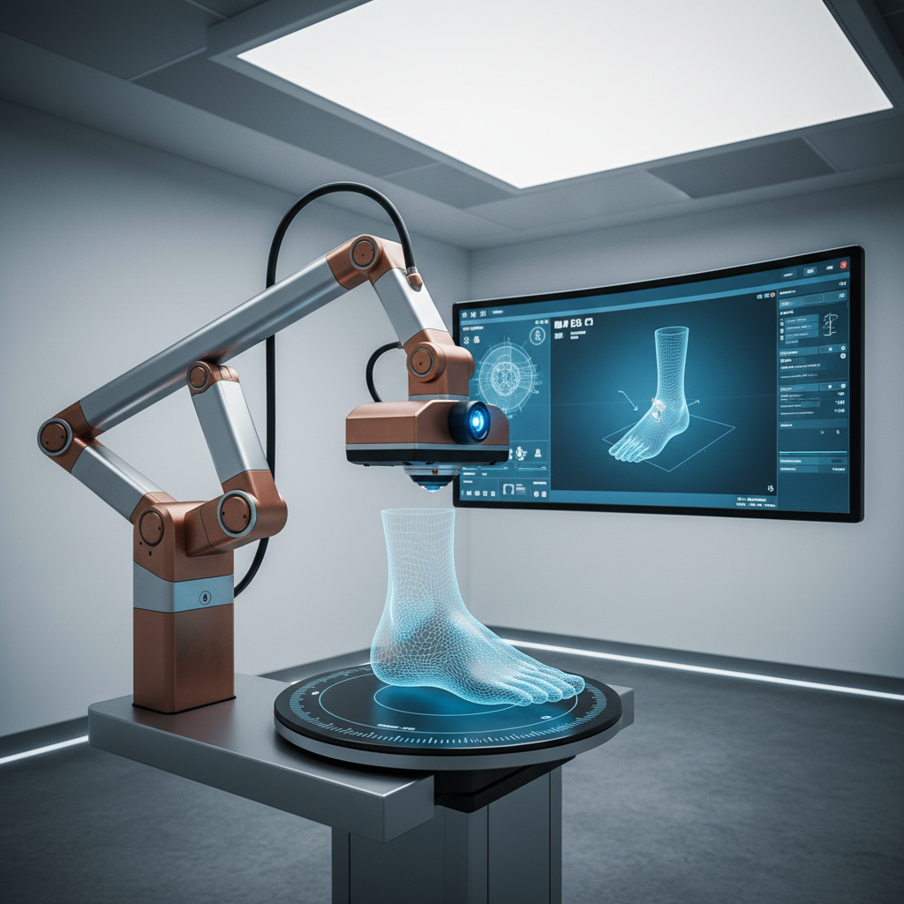
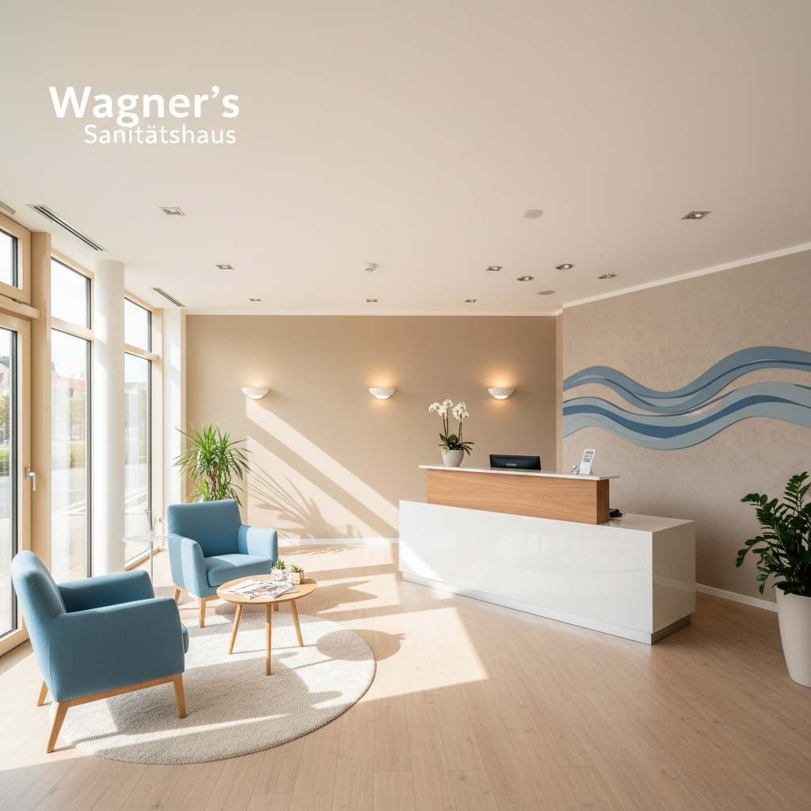

Sanitätshaus Wagner
Mehr Mobilität, mehr Lebensfreude
Wenn jeder Schritt wieder Freude machen soll – wir sind Ihr Experte für Podologie, Orthopädie und Rehatechnik auf Rügen und in Vorpommern.
Über 25 Jahre Erfahrung
Persönliche Beratung

Ihr Wohlbefinden ist unser Antrieb
Seit über 25 Jahren steht das Sanitätshaus Wagner für Kompetenz und persönliche Betreuung in der Region. Wir wissen, dass Mobilität Lebensqualität bedeutet. Deshalb setzen wir auf moderne Technik und individuelle Lösungen, die Ihnen helfen, aktiv und schmerzfrei zu leben.
- Kompetente Beratung, auch bei Ihnen zu Hause
- Moderne Technik für präzise Anpassungen
- Ganzheitliche Versorgung für Ihre Gesundheit
Wir sind für Sie da – in Bergen, Stralsund und Greifswald
Sanitätshaus Wagner Bergen (Hauptfiliale)
Gingster Ch 6a, 18528 Bergen auf Rügen
Telefon: 03838 200723
